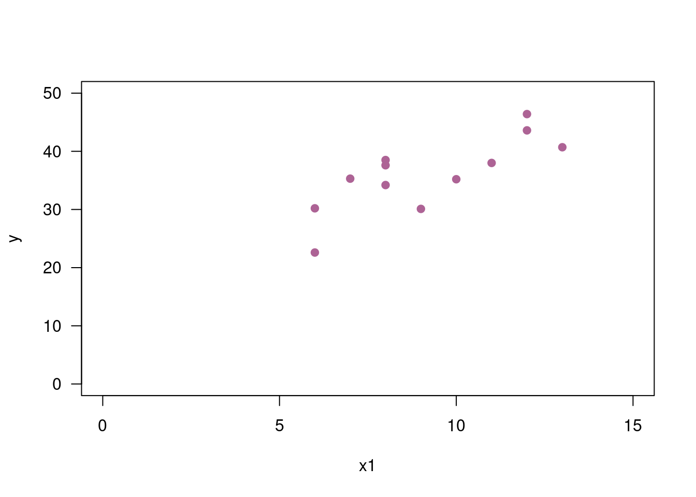

Monitoria
dgonzalez80
Taller Regresión Lineal Simple
Problema 1
Con el fin de estimar la relación que exite entre el nivel de ingresos de una persona y el nivel de consumo , un investigador recolectó la siguiente información:
| id | 1 | 2 | 3 | 4 | 5 | 6 | 7 | 8 | 9 | 10 | 11 | 12 |
|---|---|---|---|---|---|---|---|---|---|---|---|---|
| Ing | 24.3 | 12.5 | 31.2 | 28.0 | 35.1 | 10.5 | 23.2 | 10.0 | 835 | 15.9 | 14.7 | 15.0 |
| Con | 16.2 | 8.5 | 15.0 | 17.0 | 24.2 | 11.2 | 15.0 | 7.1 | 3.5 | 11.5 | 10.7 | 9.2 |
Donde :
Id: identificador del hogar
Ing : Ingresos familiares
Con : Consumo en viveres
Realice un analisis de regresión que permita estimar la relación entre el consumo (Con) y los ingresos familiares (Ing).
| id | x | y | x2 | y2 | xy |
|---|---|---|---|---|---|
| 1 | 23.4 | 16.2 | 547.56 | 262.44 | 393.66 |
| 2 | 12.5 | 8.5 | 156.25 | 72.25 | 106.25 |
| 3 | 31.2 | 15.0 | 973.44 | 225.00 | 468.00 |
| 4 | 28.0 | 17.0 | 784.00 | 289.00 | 476.00 |
| 5 | 35.1 | 24.2 | 1232.01 | 585.64 | 849.42 |
| 6 | 10.5 | 11.2 | 110.25 | 125.44 | 117.60 |
| 7 | 23.2 | 15.0 | 538.24 | 225.00 | 348.00 |
| 8 | 10.0 | 7.1 | 100.00 | 50.41 | 71.00 |
| 9 | 8.5 | 3.5 | 72.25 | 12.25 | 29.75 |
| 10 | 15.9 | 11.5 | 252.81 | 132.25 | 182.85 |
| 11 | 14.7 | 10.7 | 216.09 | 114.49 | 157.29 |
| 12 | 15.0 | 9.2 | 225.00 | 84.64 | 138.00 |
| suma | 228.90 | 149.10 | 5250.83 | 2178.81 | 3337.82 |
Resumen de formulas
Modelo de regresión lineal simple : \(Y_{i} = \beta_{0} + \beta_{1} X_{i} + u_{i}\)
Modelo estimado : \(\widehat{E[Y_{i}|X_{i}]} = \widehat{y_{i}} =\widehat{\beta_{0}} + \widehat{\beta_{1}} x_{i} = b_{0} + b_{1} x_{i}\)
Residuales : \(e_{i} =\widehat{u_{i}} = y_{i} - \widehat{y_{i}}\)
Suma de cuadrados de los errores : \(SCE = \displaystyle\sum_{i=1}^{n} e^{2} = \displaystyle\sum_{i=1}^{n} (y_{i} - \widehat{y_{i}})^{2}\)
Método de Mínimos Cuadrados Ordinarios (MCO)
Objetivo : Encontrar los valores de \(\beta_{0}\) y \(\beta_{1}\) que minimecen la Suma de Cuadrado de los Erroeres (SCE).
Ecuaciones normales: Con el fin de estimar los valores de los coeficienes se plantean dos ecuaciones con dos incognitas. Estas ecuaciones se obtienen al derivar parcialmente la SCR con respecto a los dos coeficentes.
\[\dfrac{\partial SCE}{\partial \beta_{0}} = -2 \displaystyle\sum_{i=1}^{n}(y_{i}- \beta_{0}-\beta_{1} x_{i}) = 0 \]
\[\dfrac{\partial SCE}{\partial \beta_{1}} = -2 \sum_{i=1}^{n}(y_{i}- \beta_{0}-\beta_{1} x_{i}) x_{i} = 0\]
\[n \beta_{0} + \beta_{1} \displaystyle\sum_{i=1}^{n} x_{i} = \displaystyle\sum_{i=1}^{n} y_{i}\]
\[\beta_{0} \displaystyle\sum_{i=1}^{n} x_{i} + \beta_{1} \displaystyle\sum_{i=1}^{n} x_{1}^{2} = \displaystyle\sum_{i=1}^{n} x_{i}y_{i}\]
Solución :
\[\begin{eqnarray*} b_{1} = \dfrac{n \displaystyle\sum_{i=1}^{n} x_{i}y_{i}- \Big(\displaystyle\sum_{i=1}^{n} x_{i} \displaystyle\sum_{i=1}^{n} y_{i}\Big)}{n \displaystyle\sum_{i=1}^{n} x_{i}^{2}- \Big(\displaystyle\sum_{i=1}^{n} x_{i}\Big)^{2}} \end{eqnarray*}\] \[\begin{equation*} b_{0}= \bar{y} - b_{1} \bar{x} \end{equation*}\]
\[\begin{equation*} \dfrac{149.10}{12}-0.55817 \dfrac{228.90}{12} = 1.77788 \end{equation*}\]
\[\begin{eqnarray*} S_{xx} = \displaystyle\sum_{i=1}^{n} (x_{i}- \bar{x})^{2} = \sum_{i=1}^{n} x_{i}^{2} - \dfrac{\Big(\displaystyle\sum_{i=1}^{n} x \Big)^{2}}{n} \end{eqnarray*}\]
\[\begin{equation*} S_{xx} = 5280.83-\dfrac{(228.90)^{2}}{12} = 884.5625 \end{equation*}\]
\[\begin{eqnarray*} S_{yy} = \displaystyle\sum_{i=1}^{n} (y_{i}- \bar{y})^{2} = \sum_{i=1}^{n} y_{i}^{2} - \dfrac{\Big(\displaystyle\sum_{i=1}^{n} y_{i} \Big)^{2}}{n} \end{eqnarray*}\]
\[\begin{equation*} S_{yy} = 2178.81-\dfrac{(149.0)^{2}}{12} = 326.2425 \end{equation*}\]
\[\begin{eqnarray*} S_{xy} = \displaystyle\sum_{i=1}^{n} (y_{i}- \bar{y})(x_{i}- \bar{x}) = \sum_{i=1}^{n} x_{i}y_{i} - \dfrac{\Big(\displaystyle\sum_{i=1}^{n} x_{i} \displaystyle\sum_{i=1}^{n} y_{i} \Big)}{n} \end{eqnarray*}\]
\[\begin{equation*} S_{xy} = 3337.82-\dfrac{228.90 \times 149.10}{12} = 493.7375 \end{equation*}\]
Suma de Cuadrados de los Errores (Residuales)
\[\begin{eqnarray*} SCE =\sum_{i=1}^{n} u_{i}^{2}=\sum_{i=1}^{n} (y_{i}-\widehat{y_{i}})^{2}= S_{yy} - b_{1} S_{xy} \end{eqnarray*}\]
\[\begin{equation*} SCE = 326.2425 -0.55817 \times 493.7375 = 50.65304 \end{equation*}\]
\[\begin{equation*} s^{2} =\dfrac{SCE}{n-2} = \dfrac{Syy - b_{1} S_{xy}}{n-2} = %\dfrac{50.65304}{10}= 5.65304 \end{equation*}\] % \[\begin{eqnarray*} IC_{\beta_{1}} : b_{1} t_{v=n-2; \alpha/2} \dfrac{s}{\sqrt{S_{xx}}} \end{eqnarray*}\]
\[\begin{eqnarray*} T_{0} = \dfrac{b_{1}- \beta_{1o}}{s/\sqrt{S_{xx}}} \end{eqnarray*}\]
\(H_{0}: \beta_{1}=\beta_{2}=...\beta_{k} =
0\)
\(H_{a}:\) algun \(\beta_{i}\) es diferente de cero
Pruebas de hipotesis individuales
Prueba de hipotesis individual para el intercepto
\(H_{0}: \beta_{0} = 0\)
\(H_{a}: \beta_{0} \neq 0\)
Estadístico de prueba
\[\begin{eqnarray*} t=\dfrac{b_{0}-0}{s \sqrt{\dfrac{\displaystyle\sum_{i=1}^{n}x_{i}^{2}}{n S_{xx}}}} = \dfrac{1.77788-0}{\sqrt{5.065}\sqrt{\dfrac{5250.83}{12 \times 884.5625}}} = 1.123 \end{eqnarray*}\] Valor-p
2*pt(-1.123,11)[1] 0.2853501Prueba de hipotesis individual para la pendiente
\(H_{0}: \beta_{1} = 0\) \(H_{a}: \beta_{1} \neq 0\)
Estadistico de prueba:
\[\begin{eqnarray*} t=\dfrac{b_{1}-0}{\dfrac{s}{\sqrt{S_{xx}}}} = \dfrac{0.55817}{\sqrt{5.0652/884.5625}} = 7.376 \end{eqnarray*}\]
2*pt(-7.376,11)[1] 1.401564e-05Intervalo de confianza para la media \(\mu_{Y|x_{0}}\)
\[\begin{eqnarray*} \widehat{y_{0}} \pm t_{\alpha/2} s \sqrt{\dfrac{1}{n} \dfrac{(x_{0}-\bar{x})^{2}}{S_{xx}}} \end{eqnarray*}\] \(v=n-k\) grados de libertad
Intervalo de confianza para predicción para \(y_{0}\)
\[\begin{eqnarray*} \widehat{y_{0}} \pm t_{\alpha/2} s \sqrt{1+ \dfrac{1}{n} \dfrac{(x_{0}-\bar{x})^{2}}{S_{xx}}} \end{eqnarray*}\]
\(v=n-k\) grados de libertad
x=c(24.3,12.5,31.2,28,35.1,10.5,23.2, 10,8.5,15.9,14.7,15)
y=c(16.2,8.5,15,17,24.2,11.2,15,7.1,3.5,11.5,10.7,9.2)
regresion=lm(y ~ x) # estimacion del modelo por MCO
summary(regresion) # resumen del modelo
Call:
lm(formula = y ~ x)
Residuals:
Min 1Q Median 3Q Max
-4.1928 -0.5426 0.0088 0.8500 3.5613
Coefficients:
Estimate Std. Error t value Pr(>|t|)
(Intercept) 1.77788 1.58292 1.123 0.288
x 0.55817 0.07567 7.376 2.38e-05 ***
---
Signif. codes: 0 '***' 0.001 '**' 0.01 '*' 0.05 '.' 0.1 ' ' 1
Residual standard error: 2.251 on 10 degrees of freedom
Multiple R-squared: 0.8447, Adjusted R-squared: 0.8292
F-statistic: 54.41 on 1 and 10 DF, p-value: 2.38e-05En el resumen se puede visializar la siguiente informacion :
Resumen de los residuales :
mínimo (-4.19),
\(Q_{1}\) (-0.54),
\(Me\) (0.0088),
\(Q_{3}\) (0.85) y
maximo (3.56).
Estimacion de los coeficientes :
\(\widehat{\beta_{_{0}}} = 1.77788\) y
\(\widehat{\beta_{_{1}}} = 0.55817\)
- Pruebas de significancia individuales
| Ho | Ha | valor-p | Decisión |
|---|---|---|---|
| \(H_{o} : \beta_{_{0}} =0\) | \(H_{a} : \beta_{_{0}} \neq 0\) | \(0.288\) | Se asume que \(\beta_{_{0}}=0\) |
| \(H_{o} : \beta_{_{1}} =0\) | \(H_{a} : \beta_{_{1}} \neq 0\) | \(0.0000\) | \(\beta_{_{1}} \neq 0\) |
Aunque el resultado indique que \(\beta_{_{0}} =0\), el intercepto no debe excluirse del modelo dado que el forzar que la linea de regresión pase por el origen, genera un sesgo en la estimación de la pendiente \(\beta_{_{1}}\)
De estos resultados se tienen que el modelo estimado es :
\[\widehat{y} = 1.77788 + 0.55827 x\]
plot(x,y, xlab = "Ingresos", ylab = "Consumo") # grafico de dispersion
abline(regresion) # grafica de la linea de regresion
ANOVA ( Análisis de Varianza )
El analisis de varianza se utiiza para determinar la significancia global del modelo cuando existen varias variables independientes ( mas de una pendiente) y se emplea para derminar si de manera conjunta todas las pendientes son cero (\(Ho: \beta_{i} =0\)) o se por el contario al menos una de ellas es diferente de cero (\(Ha\))
En este caso se construye unna prueba F mediante la separacion de las sumas de cuadrados totales en dos parates : Suma de cuadrados debia a la regresion (SCReg) y la suma de cuadrados de los residuales (SCRes) :
\[SCT = SCReg + SCRes\]
\[326.2425 = 275.590 + 50.652\]
Con estos valores divididos entre sus respectivos grados de libertad
se encentranlos cuadrados medios, que corresponden a dos varianzas. La
division de estos dos valores genera el estadistico F de esta prueba (F=
275.590/5.0652 = 54.408). Finalmente se puede calcular el valor-p
(pf(54.408,1,10, lower.tail=FALSE))
| Fuentes de variación | grados de libertad | Suma de Cuadrados | Cuadrados Medios | F | Valor-p |
|---|---|---|---|---|---|
| Regresión | \(k-1\) | \(b_{1} S_{xy}\) | \(\dfrac{SCReg}{(k-1)}\) | \(\dfrac{CMReg}{CMRes}\) | \(1-pf\) |
| \(2-1\) | 275.590 | 275.590 | 54.408 | 0.0000 | |
| Residuales | \(n-k\) | \(S_{yy}-b_{1} S_{xy}\) | \(\dfrac{SCRes}{(n-k)}\) | ||
| \(12-1\) | 50.652 | 5.0652 | |||
| Total | \(n-1\) | \(S_{yy}\) | |||
| \(12-1\) | 326.2425 |
anova(regresion)Analysis of Variance Table
Response: y
Df Sum Sq Mean Sq F value Pr(>F)
x 1 275.590 275.590 54.408 2.38e-05 ***
Residuals 10 50.652 5.065
---
Signif. codes: 0 '***' 0.001 '**' 0.01 '*' 0.05 '.' 0.1 ' ' 1Para el caso de la regresión lineal simple esta prueba (ANOVA), genera los mismos resultados que la prueba t realizada sobre \(\beta_{_{1}}\).
Se presenta una equivalencia de : \(t^2 = F\)
Despues de realizar la estimación y las pruebas de significancia individuales es necesario la validación de los supuestos sobre los errores :
- Valor esperado de los erroes igual a cero
- Varianza constante de los errores (homoscedasticidad)
- Normalidad de los errores
- Independencia de los errores (no autocorrelacion de errores)
Despues de esto se puede utilizar el modelo para la estimación de la variable dependiente o para la interprestacion de las pendientes como valoración del efecto que genera un cambio unitario de la variable independiente sobre la variable dependiente.
En esta caso podemos decir que un incremento de un peso en los ingresos genera un increento de 0.55 sobre el consumo
Problema 2
Se evalua un nuevo reporte. Se han colgado veinticinco pesas \(x_{i}\) y se mide para cada una la longitud del resorte \(y_{i}\). Los pesos se miden en lobras, y la longitud, en pulgadas. Se registró el siguiente resumen estadístoco:
| \(\bar{x} = 2.40\) | \(\bar{y} = 12.18\) |
| \(\displaystyle\sum_{i=1}^{25} (x_{i} - \bar{x})^{2} = 52.00\) | \(\displaystyle\sum_{i=1}^{25} (y_{i} - \bar{y})^{2} = 498.96\) |
| \(\displaystyle\sum_{i=1}^{25} (x_{i} - \bar{x})(y_{i} - \bar{y}) = 160.27\) |
Sea \(\beta_{_{0}}\) la longitud del resorte en reposo y \(\beta_{_{1}}\) el aumento en la longitud ocasionado por una carga de 1 \(lb\) . Suponta que los supuestos sobre los errores con válidos.
Calcule los estimadores de MCO \(\widehat{\beta_{_{0}}}\) y \(\widehat{\beta_{_{1}}}\)
Calcule la estimación de la varianza del error \(s^{2}_{u}\)
Determine los intervalos de confianza del 95% para \(\beta_{_{0}}\) y \(\beta_{_{1}}\)
El fabricante del resorte afirma que la constante del resorte no es mayor de 3 \(pulg/lb\) ¿Los datos proporcionan evidencias suficientes para rechazar esta afirmación?
Tambien se afirma que la longitud sin carga del resorte es de al menos 5.5 \(pulg\). ¿Los datos proporcionan pruebas suficientes para rechazar esta afirmación?
Determine un intervalo de confianza del 99% para la longitud del resorte bajo una carga de 1.5 \(lb\).
Tomado de Navidi(2006)
Problema 3
Para muchos compuestos químicos, la cantidad que se disolverá en un volumen de agua específico depende de la temperatura. El siguiente resultado describe un modelo lineal \(y = \beta_{_{0}} + \beta_{_{1}} x + u\) que expresa el número de granos de cierto compuesto químico disuelto por litro de agua (\(Y\)) con respecto a la temperatura en grados centigrados (\(X\)) para un total de n=6 observaciones.
| Predictor | Coeficiente | SE Coef | t | valor-p |
|---|---|---|---|---|
| Intercepto | 1.43810 | 0.62459 | 2.30 | 0.083 |
| Temperatura | 0.30714 | 0.02063 | 14.90 | 0.000 |
Cuantos grados de libertad tiene el estadístico t de Student?
Determine un intervalo de confianza del 95% para \(\beta_{_{1}}\)
Alguien afirma que si la temperatura del agua aunenta en un grado centigrado, la media del número de gramos disueltos aumentará en exacatente 0.40 . Utilice el resultado para realizar una prueba de hipótesis con elfin de determinar si esta afirmación puede ser rechazada
Problema 4
Un propietario de una pizzeria esta interesado en estudiar la relación existente entre : el número de nuncios entregados, el costo de los anuncios de publicidad y las ventas obtenidas durante los últimos 12 meses. Esta información se registra a continuación:
| t | mes | \(X_{1}\) | \(X_{2}\) | \(Y\) |
|---|---|---|---|---|
| 1 | Mayo | 12 | 13.9 | 43.6 |
| 2 | Junio | 11 | 12.0 | 38.0 |
| 3 | Julio | 9 | 9.3 | 30.1 |
| 4 | Agosto | 7 | 9.7 | 35.3 |
| 5 | Septiembre | 12 | 12.3 | 46.4 |
| 6 | Octubre | 8 | 11.4 | 34.2 |
| 7 | Noviembre | 6 | 9.3 | 30.2 |
| 8 | Diciembre | 13 | 14.3 | 40.7 |
| 9 | Enero | 8 | 10.2 | 38.5 |
| 10 | Febrero | 6 | 8.4 | 22.6 |
| 11 | Marzo | 8 | 11.2 | 37.6 |
| 12 | Abril | 10 | 11.1 | 35.2 |
Donde:
\(t\) : identificador del mes
\(X_{1}\): Número de anuncios entregados
\(X_{2}\): Costos de anuncios publicados
\(Y\) : Ventas totales
a. Estime los siguiente modelos de regresión:
- \(y_{i}=\beta_{0}+\beta{1}X_{1i}+u_{1i}\)
- \(y_{i}=\alpha_{0}+\alpha_{1}X_{2i}+u_{2i}\)
- \(y_{i}=\gamma_{0}+\gamma_{1} t_{i}+u_{3i}\)
- \(y_{i}=\theta_{0}+\theta_{1}X_{1i}+\theta_{2}X_{2i}+u_{4i}\)
b. Para cada uno de los casos :
- Estime el modelo, mediante MCO
- Interprete los resultados obtenidos
- Valide los cuatro supuestos sobre los errores
Solución :
t=1:12
x1=c(12,11,9,7,12,8,6,13,8,6,8,10)
x2=c(13.9,12.0,9.3,9.7,12.3,11.4,9.3,14.3,10.2,8.4,11.2,11.1)
y=c(43.6,38.0,30.1,35.3,46.4,34.2,30.2,40.7,38.5,22.6,37.6,35.2)
data.frame(t,y,x1,x2) t y x1 x2
1 1 43.6 12 13.9
2 2 38.0 11 12.0
3 3 30.1 9 9.3
4 4 35.3 7 9.7
5 5 46.4 12 12.3
6 6 34.2 8 11.4
7 7 30.2 6 9.3
8 8 40.7 13 14.3
9 9 38.5 8 10.2
10 10 22.6 6 8.4
11 11 37.6 8 11.2
12 12 35.2 10 11.1modelo1=lm(y ~ x1)
summary(modelo1)
Call:
lm(formula = y ~ x1)
Residuals:
Min 1Q Median 3Q Max
-6.8364 -2.7568 0.6804 3.8346 4.8971
Coefficients:
Estimate Std. Error t value Pr(>|t|)
(Intercept) 16.9369 4.9818 3.400 0.00677 **
x1 2.0832 0.5271 3.952 0.00272 **
---
Signif. codes: 0 '***' 0.001 '**' 0.01 '*' 0.05 '.' 0.1 ' ' 1
Residual standard error: 4.206 on 10 degrees of freedom
Multiple R-squared: 0.6097, Adjusted R-squared: 0.5707
F-statistic: 15.62 on 1 and 10 DF, p-value: 0.00272plot(x1,y, pch=19, col=c1, las=1, xlim = c(0,15), ylim = c(0,50))
u1=modelo1$residuals
t.test(u1)
One Sample t-test
data: u1
t = 0, df = 11, p-value = 1
alternative hypothesis: true mean is not equal to 0
95 percent confidence interval:
-2.547816 2.547816
sample estimates:
mean of x
0 shapiro.test(u1)
Shapiro-Wilk normality test
data: u1
W = 0.92926, p-value = 0.3723lmtest::bgtest(modelo1)
Breusch-Godfrey test for serial correlation of order up to 1
data: modelo1
LM test = 2.9288, df = 1, p-value = 0.08701lmtest::dwtest(modelo1)
Durbin-Watson test
data: modelo1
DW = 2.8936, p-value = 0.9526
alternative hypothesis: true autocorrelation is greater than 0modelo2=lm(y ~ x2)
summary(modelo2)
Call:
lm(formula = y ~ x2)
Residuals:
Min 1Q Median 3Q Max
-5.7016 -1.3227 -0.6647 1.7577 6.8957
Coefficients:
Estimate Std. Error t value Pr(>|t|)
(Intercept) 4.173 7.109 0.587 0.57023
x2 2.873 0.633 4.538 0.00108 **
---
Signif. codes: 0 '***' 0.001 '**' 0.01 '*' 0.05 '.' 0.1 ' ' 1
Residual standard error: 3.849 on 10 degrees of freedom
Multiple R-squared: 0.6731, Adjusted R-squared: 0.6404
F-statistic: 20.59 on 1 and 10 DF, p-value: 0.001079plot(x2,y, pch=19, col=c2, las=1, xlim = c(0,15), ylim = c(0,50))u2=modelo2$residuals
t.test(u2)
One Sample t-test
data: u2
t = 3.4979e-17, df = 11, p-value = 1
alternative hypothesis: true mean is not equal to 0
95 percent confidence interval:
-2.331729 2.331729
sample estimates:
mean of x
3.705713e-17 shapiro.test(u2)
Shapiro-Wilk normality test
data: u2
W = 0.94755, p-value = 0.6015lmtest::bgtest(modelo2)
Breusch-Godfrey test for serial correlation of order up to 1
data: modelo2
LM test = 1.5305, df = 1, p-value = 0.216lmtest::dwtest(modelo2)
Durbin-Watson test
data: modelo2
DW = 2.7057, p-value = 0.8996
alternative hypothesis: true autocorrelation is greater than 0modelo3=lm(y ~ t)
summary(modelo3)
Call:
lm(formula = y ~ t)
Residuals:
Min 1Q Median 3Q Max
-11.5536 -2.9676 0.8352 4.1408 9.5611
Coefficients:
Estimate Std. Error t value Pr(>|t|)
(Intercept) 39.5242 3.9502 10.006 1.58e-06 ***
t -0.5371 0.5367 -1.001 0.341
---
Signif. codes: 0 '***' 0.001 '**' 0.01 '*' 0.05 '.' 0.1 ' ' 1
Residual standard error: 6.418 on 10 degrees of freedom
Multiple R-squared: 0.09101, Adjusted R-squared: 0.0001156
F-statistic: 1.001 on 1 and 10 DF, p-value: 0.3406plot(t,y, pch=19, col=c3, las=1, xlim = c(0,15), ylim = c(0,50))u3=modelo3$residuals
t.test(u3)
One Sample t-test
data: u3
t = 1.6759e-16, df = 11, p-value = 1
alternative hypothesis: true mean is not equal to 0
95 percent confidence interval:
-3.888188 3.888188
sample estimates:
mean of x
2.960595e-16 shapiro.test(u3)
Shapiro-Wilk normality test
data: u3
W = 0.96646, p-value = 0.8704lmtest::bgtest(modelo3)
Breusch-Godfrey test for serial correlation of order up to 1
data: modelo3
LM test = 0.74378, df = 1, p-value = 0.3885lmtest::dwtest(modelo3)
Durbin-Watson test
data: modelo3
DW = 2.4316, p-value = 0.6663
alternative hypothesis: true autocorrelation is greater than 0modelo4=lm(y ~ x1 + x2)
summary(modelo4)
Call:
lm(formula = y ~ x1 + x2)
Residuals:
Min 1Q Median 3Q Max
-5.6981 -1.8223 -0.6656 2.4470 6.0123
Coefficients:
Estimate Std. Error t value Pr(>|t|)
(Intercept) 6.5836 8.5422 0.771 0.461
x1 0.6247 1.1203 0.558 0.591
x2 2.1389 1.4701 1.455 0.180
Residual standard error: 3.989 on 9 degrees of freedom
Multiple R-squared: 0.684, Adjusted R-squared: 0.6138
F-statistic: 9.741 on 2 and 9 DF, p-value: 0.005604u4=modelo4$residuals
t.test(u4)
One Sample t-test
data: u4
t = 2.2285e-17, df = 11, p-value = 1
alternative hypothesis: true mean is not equal to 0
95 percent confidence interval:
-2.292466 2.292466
sample estimates:
mean of x
2.321096e-17 shapiro.test(u4)
Shapiro-Wilk normality test
data: u4
W = 0.95701, p-value = 0.7405lmtest::bgtest(modelo4)
Breusch-Godfrey test for serial correlation of order up to 1
data: modelo4
LM test = 2.2342, df = 1, p-value = 0.135lmtest::dwtest(modelo4)
Durbin-Watson test
data: modelo4
DW = 2.8333, p-value = 0.9497
alternative hypothesis: true autocorrelation is greater than 0Taller Regresión Lienal Múltiple
Problema 1
Se requiere modelar el número de días que un trabajador se ausenta de su puesto de trabajo durante un año, para lo cual se tienen en cuenta las siguientes variables :
| ausentismo | núero de dias que un trabajar falta durante un año |
| Taller | si la persona trabaja en el taller (1) o no(0) |
| sexo | hombre (1) , mujer (0) |
| edad | edad del trabajador en año |
| antigüedad | años de trabajo en la empresa |
| salario | cuanto devenga el trabajador (U$) |
\[y_{i} = \beta_{0} + \beta_{1} Taller_{i} + \beta_{2} sexo_{i} + \beta_{3} edad_{i} + \beta_{4} antiguedad_{i} + \beta_{5} salario_{i} + u\]
para \(i=1,.....n\)
Matriz de Covarianzas
library(readr)
data=paqueteDEG::ausentismo
data=data[,2:7]
round(cov(data), 2) # matriz de varianzas-covarianzas ausen taller sexo edad antg sala
ausen 14.34 0.43 -0.20 -34.84 -27.74 -1223.19
taller 0.43 0.19 0.02 -0.89 -0.50 -22.34
sexo -0.20 0.02 0.25 0.24 1.33 118.24
edad -34.84 -0.89 0.24 185.61 121.65 2081.76
antg -27.74 -0.50 1.33 121.65 104.92 2175.43
sala -1223.19 -22.34 118.24 2081.76 2175.43 234470.21Matriz de correlaciones
library(psych)
library(corrplot)corrplot 0.92 loadedround(cor(data), 3) # matriz de correlaciones ausen taller sexo edad antg sala
ausen 1.000 0.257 -0.106 -0.675 -0.715 -0.667
taller 0.257 1.000 0.073 -0.149 -0.112 -0.105
sexo -0.106 0.073 1.000 0.035 0.258 0.487
edad -0.675 -0.149 0.035 1.000 0.872 0.316
antg -0.715 -0.112 0.258 0.872 1.000 0.439
sala -0.667 -0.105 0.487 0.316 0.439 1.000cor.plot(cor(data),
main="Mapa de Calor",
diag=F,
show.legend = TRUE)
corrplot.mixed(cor(data),
upper = "square",
lower = "number",
addgrid.col = "black",
tl.col = "black")
Estimación MCO Modelo1
# Estimación del modelo
attach(data)
modelo1=lm(ausen ~ taller + sexo + edad + antg + sala , data=data)
summary(modelo1)
Call:
lm(formula = ausen ~ taller + sexo + edad + antg + sala, data = data)
Residuals:
Min 1Q Median 3Q Max
-7.0713 -0.5383 0.3031 0.9391 3.5793
Coefficients:
Estimate Std. Error t value Pr(>|t|)
(Intercept) 12.4436075 1.6404323 7.586 2.14e-09 ***
taller 0.9684600 0.6688242 1.448 0.15504
sexo 2.0492914 0.7122235 2.877 0.00628 **
edad -0.0372111 0.0469913 -0.792 0.43288
antg -0.1507700 0.0652833 -2.309 0.02590 *
sala -0.0044288 0.0007348 -6.027 3.63e-07 ***
---
Signif. codes: 0 '***' 0.001 '**' 0.01 '*' 0.05 '.' 0.1 ' ' 1
Residual standard error: 1.964 on 42 degrees of freedom
Multiple R-squared: 0.7597, Adjusted R-squared: 0.7311
F-statistic: 26.56 on 5 and 42 DF, p-value: 5.282e-12Diagnóstico del modelo 1
# diagnostico
coefficients(modelo1) # coeficientes estimados (Intercept) taller sexo edad antg sala
12.443607478 0.968459990 2.049291411 -0.037211075 -0.150770045 -0.004428793 yhat=fitted(modelo1) # valores estimados
u=residuals(modelo1) # residuales
anova(modelo1) # tabla de anovaAnalysis of Variance Table
Response: ausen
Df Sum Sq Mean Sq F value Pr(>F)
taller 1 44.444 44.444 11.5262 0.001510 **
sexo 1 10.612 10.612 2.7522 0.104573
edad 1 275.299 275.299 71.3956 1.331e-10 ***
antg 1 41.613 41.613 10.7919 0.002062 **
sala 1 140.080 140.080 36.3283 3.629e-07 ***
Residuals 42 161.950 3.856
---
Signif. codes: 0 '***' 0.001 '**' 0.01 '*' 0.05 '.' 0.1 ' ' 1vcov(modelo1) # matriz de varianzas covarianza de parámetros ( de los betas) (Intercept) taller sexo edad
(Intercept) 2.6910180499 -0.4609636984 -0.1696280253 -5.605492e-02
taller -0.4609636984 0.4473257798 -0.0535216133 2.117073e-03
sexo -0.1696280253 -0.0535216133 0.5072623436 1.228218e-02
edad -0.0560549171 0.0021170730 0.0122821769 2.208178e-03
antg 0.0686105842 -0.0008662038 -0.0163953239 -2.692865e-03
sala -0.0006247407 0.0000588528 -0.0002178462 -6.131445e-07
antg sala
(Intercept) 6.861058e-02 -6.247407e-04
taller -8.662038e-04 5.885280e-05
sexo -1.639532e-02 -2.178462e-04
edad -2.692865e-03 -6.131445e-07
antg 4.261912e-03 -7.447761e-06
sala -7.447761e-06 5.399159e-07Modelación paso a paso
# Stepwise Regression
library(MASS)
modelo2=lm(ausen ~ taller + sexo + edad + antg + sala , data=data)
step=stepAIC(modelo2, direction="both")Start: AIC=70.37
ausen ~ taller + sexo + edad + antg + sala
Df Sum of Sq RSS AIC
- edad 1 2.418 164.37 69.084
<none> 161.95 70.372
- taller 1 8.085 170.03 70.711
- antg 1 20.566 182.52 74.111
- sexo 1 31.923 193.87 77.008
- sala 1 140.080 302.03 98.288
Step: AIC=69.08
ausen ~ taller + sexo + antg + sala
Df Sum of Sq RSS AIC
<none> 164.37 69.084
- taller 1 8.731 173.10 69.568
+ edad 1 2.418 161.95 70.372
- sexo 1 44.720 209.09 78.635
- sala 1 140.779 305.15 96.781
- antg 1 151.697 316.07 98.468step$anova # display resultsStepwise Model Path
Analysis of Deviance Table
Initial Model:
ausen ~ taller + sexo + edad + antg + sala
Final Model:
ausen ~ taller + sexo + antg + sala
Step Df Deviance Resid. Df Resid. Dev AIC
1 42 161.9505 70.37230
2 - edad 1 2.417928 43 164.3684 69.08364Modelo 3
modelo3=lm(ausen ~ taller + sexo + antg + sala , data=data)
summary(modelo3)
Call:
lm(formula = ausen ~ taller + sexo + antg + sala, data = data)
Residuals:
Min 1Q Median 3Q Max
-6.989 -0.597 0.310 1.041 3.826
Coefficients:
Estimate Std. Error t value Pr(>|t|)
(Intercept) 11.4989988 1.1211859 10.256 3.98e-13 ***
taller 1.0041358 0.6644050 1.511 0.13802
sexo 2.2562643 0.6596516 3.420 0.00138 **
antg -0.1961488 0.0311366 -6.300 1.34e-07 ***
sala -0.0044391 0.0007315 -6.069 2.91e-07 ***
---
Signif. codes: 0 '***' 0.001 '**' 0.01 '*' 0.05 '.' 0.1 ' ' 1
Residual standard error: 1.955 on 43 degrees of freedom
Multiple R-squared: 0.7561, Adjusted R-squared: 0.7334
F-statistic: 33.33 on 4 and 43 DF, p-value: 1.15e-12Modelo 4
modelo4=lm(ausen ~ sexo + antg + sala , data=data)
summary(modelo4)
Call:
lm(formula = ausen ~ sexo + antg + sala, data = data)
Residuals:
Min 1Q Median 3Q Max
-6.8757 -0.9888 0.2701 1.3332 4.0126
Coefficients:
Estimate Std. Error t value Pr(>|t|)
(Intercept) 12.4172771 0.9559277 12.990 < 2e-16 ***
sexo 2.4035082 0.6618691 3.631 0.000732 ***
antg -0.2000174 0.0314808 -6.354 1.02e-07 ***
sala -0.0045732 0.0007366 -6.208 1.67e-07 ***
---
Signif. codes: 0 '***' 0.001 '**' 0.01 '*' 0.05 '.' 0.1 ' ' 1
Residual standard error: 1.983 on 44 degrees of freedom
Multiple R-squared: 0.7432, Adjusted R-squared: 0.7257
F-statistic: 42.44 on 3 and 44 DF, p-value: 4.805e-13uhat=modelo4$residuals
#-----------------------------------------------------------------
# Examen de normalidad de errores
shapiro.test(uhat)
Shapiro-Wilk normality test
data: uhat
W = 0.92696, p-value = 0.005279# Supuesto de no autocorrelacion
# install.packages("lmtest")
library(lmtest)Loading required package: zoo
Attaching package: 'zoo'The following objects are masked from 'package:base':
as.Date, as.Date.numeric# Prueba de D-W - autocorrelacion
# Ho: los erreres no estan autocorrelacionados
dwtest(modelo4)
Durbin-Watson test
data: modelo4
DW = 1.8731, p-value = 0.3097
alternative hypothesis: true autocorrelation is greater than 0# Supuesto de homoscedasticidad
# Prueba de Goldfeld-Quandt
# Ho no existe heteroscedasticidad
gqtest(modelo4)
Goldfeld-Quandt test
data: modelo4
GQ = 0.46949, df1 = 20, df2 = 20, p-value = 0.9506
alternative hypothesis: variance increases from segment 1 to 2# Supuesto de correcta especificacion
# Prueba de especificacion
# Prueba RESET
resettest(modelo4, power=2, type="regressor")
RESET test
data: modelo4
RESET = 1.7756, df1 = 3, df2 = 41, p-value = 0.1669Modelo 5
modelo5=lm(ausen ~ antg + sala , data=data)
summary(modelo5)
Call:
lm(formula = ausen ~ antg + sala, data = data)
Residuals:
Min 1Q Median 3Q Max
-5.508 -1.103 0.033 1.914 3.610
Coefficients:
Estimate Std. Error t value Pr(>|t|)
(Intercept) 11.9557841 1.0680594 11.194 1.35e-14 ***
antg -0.1934922 0.0354307 -5.461 1.95e-06 ***
sala -0.0034216 0.0007495 -4.565 3.85e-05 ***
---
Signif. codes: 0 '***' 0.001 '**' 0.01 '*' 0.05 '.' 0.1 ' ' 1
Residual standard error: 2.236 on 45 degrees of freedom
Multiple R-squared: 0.6662, Adjusted R-squared: 0.6514
F-statistic: 44.91 on 2 and 45 DF, p-value: 1.898e-11Modelo final :
ausentismo ~ 11.9557841 - 0.1934922 antiguedad - 0.0034216 salario
Final 2019-1
Resuelva los siguientes problemas. En cada caso haga explícitos todos los pasos necesarios e indique el número del listado utilizado, en caso de requerirlo. En todos los puntos suponga que las variables estudiadas tienen una distribución normal.
problema 1.
Un artículo afirma que los estudiantes de pregrado en Latinoamérica gastan en promedio más de US$ 75 mensuales en gastos relacionados con el estudio (fotocopias, impresiones, pasajes, entre otros). Un estudio reciente conformado por 100 estudiantes latinoamericanos arrojó un promedio de US$ 80.23 y una desviación estándar de US$ 45.65 . Se puede afirmar que el reciente estudio confirma los resultados encontrados en el artículo?
problema 2.
Una emisión del mes de abril de 2016 de la revista Fortune cuenta la historia sobre los adictos al trabajo, entre los 25 y 43 años, que trabajan en el área las ingenierías. El artículo compara la vida laboral de estos ingenieros con los trabajadores que dedicaban menos horas a su trabajo. Los datos recogidos por la investigación fueron los siguientes : Grupo-1 conformado por los jóvenes que dedicaban mucho tiempo al trabajo: \(\bar{x}_{1}=62.5\) horas , \(s_{1}=23.7\) horas, \(n_{1}=175\) y el Grupo-2 que pasaba menos tiempo en el trabajo : \(\bar{x}_{2}=39.7\) horas , \(s_{2}=8.9\) horas, \(n_{2}=168\). ¿ Qué podemos concluir a partir de la información suministrada?
problema 3.
Un estudio realizado por MasterCard reveló que 131 de las 468 mujeres que efectuaron compras en un almacén lo hicieron utilizando la tarjeta de crédito propia del almacén, mientras que 57 de 237 hombres utilizaron la misma tarjeta para sus compras en el almacén. ¿ Existe evidencia suficiente en los datos que permita concluir que la proporción de mujeres es mayor que la proporción de hombres que utilizan la tarjeta de crédito propia del almacén para realizar sus compras?
problema 4.
En una afamada universidad se cuestiona la calidad de las hamburguesas de McDoglas, en especial algunas afirmaciones sobre que su producto de un cuarto de libra no contiene el peso establecido. Para verificar si dichas afirmaciones son válidas, un profesor realizó un estudio con su grupo de 25 estudiantes. Cada uno de sus estudiantes compró una hamburguesa y la llevo al salón donde fue pesada con una balanza certificada. Los resultados obtenidos fueron: \(\bar{x}=0.22\) libras y \(s=0.09\) libras. De acuerdo con la anterior información que se puede concluir ?
problema 5.
A seis ingenieros que trabajan para el estado se les solicitó realizar un pronóstico de la tasa de inflación para el año entrante. La misma petición se le realizo a ocho especialistas en finanzas que trabajan para el sector privado. Los pronósticos entregado se recogen en la siguiente tabla :
ingenieros :4.2 5.1 3.9 4.7 4.8 5.8
especialistas en finanzas :5.7 6.1 5.2 4.9 4.6 4.5 5.2 5.5¿Están los especialistas (ingenieros y financieros) realizando pronósticos similares?
Ejercicios tomados de Webster 2000
LISTADO 1
One-Sample T
Test of mu = 0,25 vs not = 0,25
N Mean StDev SE Mean 95% CI T P
25 0,2200 0,0900 0,0180 (0,1828. 0,2572) -1,67 0,109LISTADO 2
Two-Sample T-Test and CI
Sample N Mean StDev SE Mean
1 175 62,5 23,7 1,8
2 168 39,70 8,90 0,69
Difference = mu (1) - mu (2)
Estimate for difference: 22,80
95% CI for difference: (18,97. 26,63)
T-Test of difference = 0 (vs not =): T-Value = 11,70
P-Value = 0,000 DF = 341LISTADO 3
Two-Sample T-Test and CI: Ing. Fin
N Mean StDev SE Mean
Ing 6 4,750 0,672 0,27
Fin 8 5,213 0,546 0,19
Difference = mu (Ing) - mu (Fin)
Estimate for difference: -0,463
95% CI for difference: (-1,170. 0,245)
T-Test of difference = 0 (vs not =): T-Value = -1,42
P-Value = 0,180 DF = 12
Both use Pooled StDev = 0,6016LISTADO 4
One-Sample T
Test of mu = 75 vs not = 75
N Mean StDev SE Mean 95% CI T P
100 80,23 45,65 4,56 (71,17. 89,29) 1,15 0,255LISTADO 5
Test and CI for Two Proportions
Sample X N Sample p
1 131 468 0,279915
2 57 237 0,240506
Difference = p (1) - p (2)
Estimate for difference: 0,0394082
95% CI for difference: (-0,0285271. 0,107343)
Test for difference = 0 (vs not = 0): Z = 1,14 P-Value = 0,256
Fisher's exact test: P-Value = 0,280LISTADO 6
Test and CI for One Proportion
Sample X N Sample p 95% CI
1 131 468 0,279915 (0,239673. 0,322963)LISTADO 7
Two-Sample T-Test and CI
Sample N Mean StDev SE Mean
1 175 62,5 23,7 1,8
2 168 39,70 8,90 0,69
Difference = mu (1) - mu (2)
Estimate for difference: 22,80
95% CI for difference: (19,02. 26,58)
T-Test of difference = 0 (vs not =): T-Value = 11,88
P-Value = 0,000 DF = 223LISTADO 8
One-Sample Z
Test of mu = 75 vs not = 75
The assumed standard deviation = 45,65
N Mean SE Mean 95% CI Z P
100 80,23 4,56 (71,28. 89,18) 1,15 0,252LISTADO 9
Test and CI for One Proportion
Sample X N Sample p 95% CI
1 131 468 0,279915 (0,239673. 0,322963)LISTADO 10
Test and CI for One Proportion
Sample X N Sample p 95% CI
1 57 237 0,240506 (0,187540. 0,300088)LISTADO 11
Two-Sample T-Test and CI: Ing. Fin
N Mean StDev SE Mean
Ing 6 4,750 0,672 0,27
Fin 8 5,213 0,546 0,19
Difference = mu (Ing) - mu (Fin)
Estimate for difference: -0,463
95% CI for difference: (-1,221. 0,296)
T-Test of difference = 0 (vs not =): T-Value = -1,38
P-Value = 0,201 DF = 9LISTADO 12
One-Sample Z
Test of mu = 0,25 vs not = 0,25
The assumed standard deviation = 0,09
N Mean SE Mean 95% CI Z P
25 0,2200 0,0180 (0,1847. 0,2553) -1,67 0,096LISTADO 13
Test for Equal Variances
95% Bonferroni confidence intervals for standard deviations
Sample N Lower StDev Upper
1 175 21,1510 23,7 26,9171
2 168 7,9251 8,9 10,1364
F-Test (Normal Distribution)
Test statistic = 7,09. p-value = 0,000